French-style plugs and sockets
CEE 7/5 "French" sockets - which, despite their name, likely originated in Belgium - are quite interesting, as they're the only residential plug standard still in use to provide the earth connection with a metal pin protruding out of the outlet. Matching plugs feature a corresponding hole for the earth contact and are known as CEE 7/6.
As with the Schuko standard, plugs use pins with a diameter of 4.8mm spaced 19mm apart and the sockets are recessed to prevent accidentally touching the pins while they're live. Unlike the Schuko system though, these plugs are polarised - that is, they preserve the distinction between line and neutral. However, there isn't a unified standard for which connection is supposed to be which (the preferred wiring methods can differ between countries) and it's usually not mandatory, so for all intents and purposes it's as if it weren't polarised.
Aside from France, this standard is used in Belgium, Czechia, Poland, Slovakia and parts of Africa.
Standard power socket
Rating: 16A 250V
This is a typical example of a CEE 7/5 socket, made by French manufacturer Schneider Electric as part of their Asfora series. Safety shutters are present, as they're mandatory in France (where this item was bought) and Belgium.
The front cover is made of two parts, one of which would be replaced when mounting multiple electrical accessories together in larger boxes, held on by one screw. It's clear that this device was designed well, from the high-quality materials to details like the inscription of how much insulation to remove from the wires.
Wiring is done with screw-clamp terminals, which are marked with L and N and are slightly recessed for safety. As is typical with European sockets, mounting is possible either with screws or "claws" (griffes in French).


CEE 7/6 and 7/7 plugs
Earthed appliances typically come fitted with a CEE 7/7 plug, compatible with both French-style and Schuko sockets. CEE 7/6 plugs, which work only on CEE 7/5 sockets, are nowadays only available at hardware stores for wiring a device manually. The non-earthed CEE 7/16 (Europlug) and CEE 7/17 (contour plug) are also commonly used.
Rewireable plug
Rating: 16A 250V
This is a French-style (CEE 7/6) rewireable plug, made by Legrand. This model has a side entry cord (which comes out at an angle) and a ring to unplug it more easily.
The plug opens by removing a screw; the wires can then be connected with screws, and the cord can be secured with a cord grip.
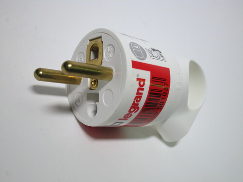{kind=link}
 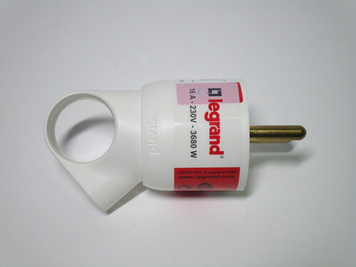
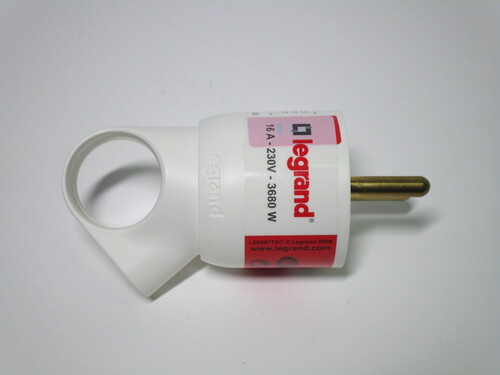
{kind=link}
Dual power socket
Rating: 16A 250V
Like with Schuko sockets, dual outlets are also available for the French-style standard, allowing two of them to be used in a single-gang wall box. The tradeoff is that it has to protrude slightly further than a standard one, though not by much.
As CEE 7/5 power sockets are polarised, dual outlets typically have one of them rotated (or at an angle), to prevent plugs with the cord on the bottom from interfering with each other. However, on this example, the corresponding contacts haven't been reversed, likely as a cost-cutting measure as this is a fairly cheap model (which is likely also why the frame is made entirely out of plastic), so only one of the two sockets can ever be at the correct polarity.
All screws are hidden from sight thanks to a clip-on cover, which can be removed to reveal the mounting screws and the ones for the "claws". The terminals are screwless: the wire, which must be solid-core, is simply pushed in and can later be removed using two levers, colour coded for the line and neutral connections.
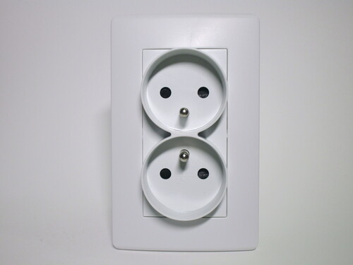 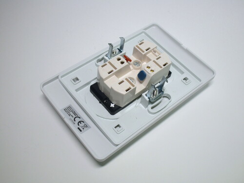 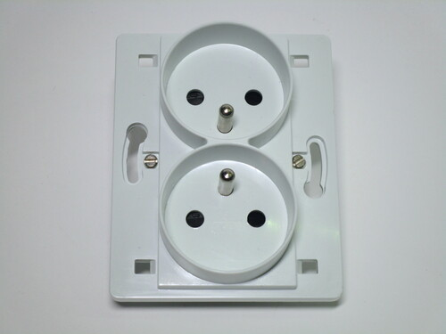{kind=link}
{kind=link}
{kind=link}
Legrand double socket
Rating: 16A 250V
Aside from conventional double sockets like the one shown previously, Legrand also manufactures this quite unusual model. It's a single item with two outlets, which fits in a double-gang French-style wall box, after removing the separator that may be present between the two halves.
This is in contrast to how installing two (or more) sockets is usually done; normally, each one is a separate item that can be mounted next to each other with a faceplate joining them together. Having both outlets built into the same device (somewhat reminiscent of British twin sockets) gives a cleaner look, as the front part is made entirely out of a single piece of plastic, though at the expense of flexibility.


Vintage twistable plug from Legrand
Rating: 10/16A 250V
This old plug has an interesting design, as it allows the cord grip to be set at three different angles. Changing orientation is done by taking it apart and placing them back together at the desired position, which is set by three different indentations.
Given that CEE 7/6 plugs are polarised, twistable plugs can be especially useful, as they allow the cord grip to not interfere with a plug on an adjacent socket.
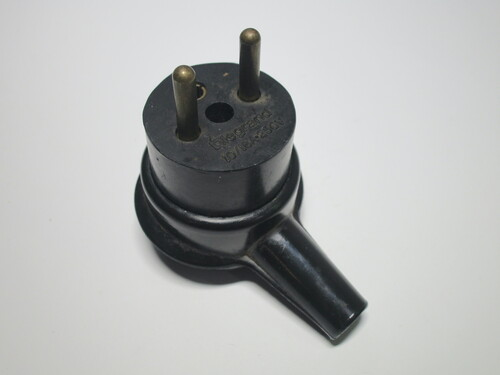 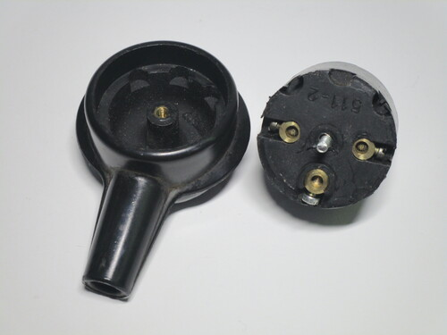 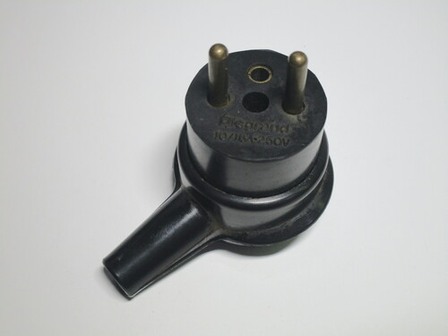{kind=link}
{kind=link}
{kind=link}
Multiway adaptor
Rating: 250V
This is a three-way adaptor, which allows up to three items to be connected to a single power socket. Its design is similar to Schuko models, though as CEE 7/5 sockets are polarised it can only be plugged in in a single direction. This adaptor uses a CEE 7/6 plug, which means that it can't be used with Schuko sockets, however this isn't universal: other designs are available which use a CEE 7/7 (Schuko-French hybrid).
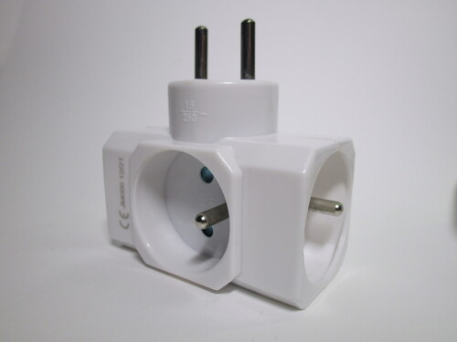 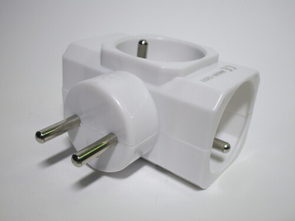{kind=link}
{kind=link}

Power strip
Rating: 16A 250V
This is a small three-outlet power strip, with an illuminated on/off switch and a cord with a moulded-on CEE 7/7 plug. It was bought at a French supermarket and has a compact design, shaped like a square with rounded corners.
There are two noteworthy things about it: firstly, only two of the sockets are wired correctly, since there doing so isn't mandatory and there isn't an agreed-upon standard (and it made things easier from a manufacturer's perspective). Secondly, despite the power strip being rated for 16A (3680W), it only has a 1mm2 cord. This is quite concerning, as that size of wire is no way capable of handling that much current, especially under two layers of plastic insulation.